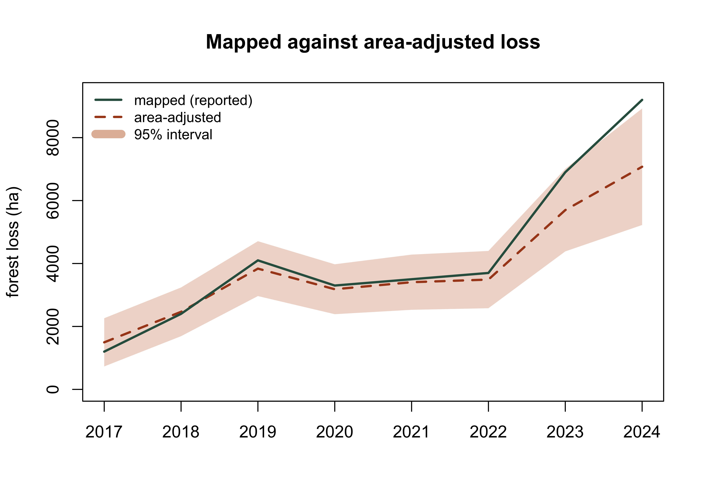
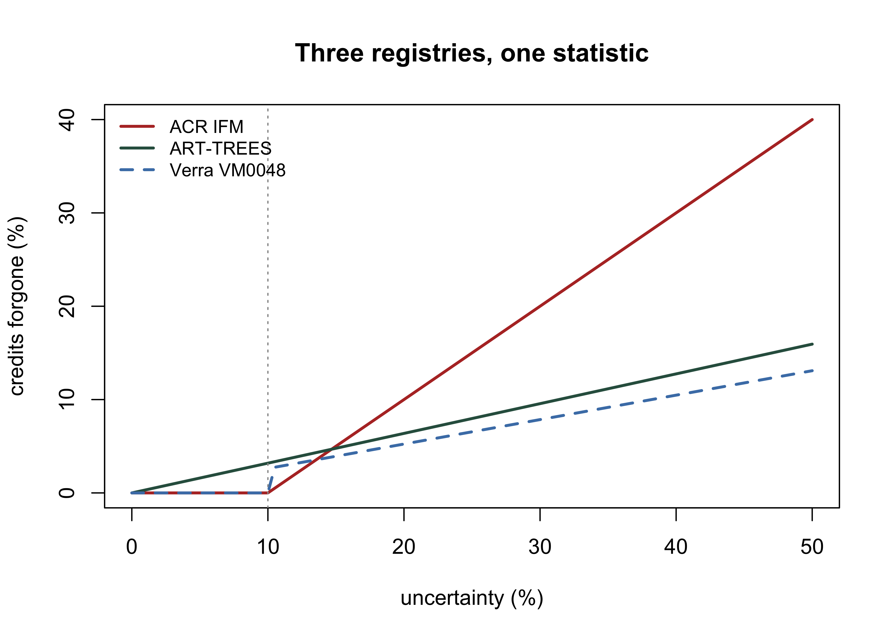

library(dplyr)
stems <- read.csv("data/scbi_stems.csv")
stems <- stems |>
mutate(agb_kg = exp(-2.48 + 2.4835 * log(dbh)), # Jenkins generic hardwood
carbon_Mg = 0.47 * agb_kg / 1000)
area_ha <- 25.6
total_C <- sum(stems$carbon_Mg)
C_per_ha <- total_C / area_ha
round(c(total_MgC = total_C, MgC_per_ha = C_per_ha), 1)
#> total_MgC MgC_per_ha
#> 82.3 3.211 Uncertainty
11.1 Why uncertainty
Every estimate in this book is wrong by some amount, and the discipline of verification is knowing by how much. A carbon figure without an uncertainty is not conservative, it is simply incomplete, and the crediting standards, ART-TREES, VCS, ACR, all deduct credits in proportion to how uncertain the estimate is. Reducing uncertainty is therefore worth real money, and quantifying it honestly is the auditor’s core duty. This chapter builds the estimate, then its error, on the running stem data.
11.2 A carbon estimate
We convert diameters to aboveground biomass with a published generic hardwood equation (Jenkins et al., 2003), apply the IPCC default carbon fraction of 0.47 (IPCC, 2006), and scale to the plot area:
That point estimate is the easy part. Three distinct sources of error sit beneath it: sampling error from measuring plots rather than the whole population, model error in the allometric equation, and parameter error in constants like the carbon fraction.
11.3 Sampling error
Divide the plot into quadrats and each becomes a sample of carbon density. The variation among them is the sampling uncertainty of the plot mean, summarised by the standard error and a confidence interval:
stems$quadrat <- paste(cut(stems$gx, 8), cut(stems$gy, 12))
quadrat_area <- 25.6 / (8 * 12) # ha per quadrat (equal-area cut)
qd <- stems |>
group_by(quadrat) |>
summarise(carbon_Mg = sum(carbon_Mg), .groups = "drop") |>
mutate(carbon_ha = carbon_Mg / quadrat_area)
m <- mean(qd$carbon_ha); se <- sd(qd$carbon_ha) / sqrt(nrow(qd))
ci <- m + c(-1.96, 1.96) * se
round(c(mean = m, se = se, lower = ci[1], upper = ci[2]), 1)
#> mean se lower upper
#> 3.2 0.4 2.5 3.9The half-width relative to the mean is the number the standards care about: the wider it is, the deeper the deduction.
11.4 Measuring error
Sampling error assumed the per-tree biomass was right and asked only how well the plot represents the stand. The other half of the problem is the model itself, and to quantify that you need trees whose biomass was actually measured rather than predicted. The tree_measurements file holds 6,681 harvested trees across six coastal species, each with diameter, height and observed aboveground biomass, so predictions can be checked against truth.
No single number describes an error well, and the common metrics answer genuinely different questions. Written on the residual \(e_i = \hat{y}_i - y_i\):
\[\text{bias} = \frac{1}{n}\sum e_i \qquad \text{MAE} = \frac{1}{n}\sum |e_i| \qquad \text{MSE} = \frac{1}{n}\sum e_i^2 \qquad \text{RMSE} = \sqrt{\text{MSE}}\]
\[\text{MAPE} = \frac{100}{n}\sum \left|\frac{e_i}{y_i}\right| \qquad R^2 = 1 - \frac{\sum e_i^2}{\sum (y_i - \bar{y})^2}\]
Bias is signed and measures systematic error: it can be near zero while every individual prediction is badly wrong, because overestimates cancel underestimates. MAE is the typical error magnitude in the units of the data. MSE squares the residuals, so it is dominated by the largest ones, and RMSE is its square root, returned to the original units and therefore directly readable. Whether you prefer MAE or RMSE is a statement about how much you care about occasional large errors relative to many small ones, and in biomass work you should care a great deal, because a handful of large trees carry most of the carbon. Relative RMSE, the RMSE as a percentage of the observed mean, is what makes results comparable across species and datasets, and it is the quantity the crediting standards consume.
Two definitions of \(R^2\) circulate. The one above, one minus the residual sum of squares over the total, is the proportion of variance explained and can go negative for a bad model. The alternative, the squared correlation between observed and predicted, cannot go negative and will flatter a model with a systematic offset. This book uses the first throughout.
tm <- read.csv("data/tree_measurements.csv")
metrics <- function(obs, prd) {
e <- prd - obs
c(bias = mean(e),
rel_bias = 100 * mean(e) / mean(obs),
mae = mean(abs(e)),
rmse = sqrt(mean(e^2)),
rel_rmse = 100 * sqrt(mean(e^2)) / mean(obs),
mape = 100 * mean(abs(e / obs)),
r2 = 1 - sum(e^2) / sum((obs - mean(obs))^2))
}Fit the standard log-log allometry. Fitting on logs stabilises the variance, but exponentiating the prediction returns the median rather than the mean and biases the result low, so the fit carries the Baskerville correction factor \(\exp(\hat{\sigma}^2/2)\) (Baskerville, 1972):
fit <- lm(log(agb_kg) ~ log(dbh_cm), data = tm)
cf <- exp(sigma(fit)^2 / 2) # Baskerville correction
pred <- exp(predict(fit, tm)) * cf
round(metrics(tm$agb_kg, pred), 3)
#> bias rel_bias mae rmse rel_rmse mape r2
#> 1.959 0.271 68.948 160.516 22.216 10.358 0.983
round(metrics(tm$agb_kg, exp(predict(fit, tm))), 3) # uncorrected
#> bias rel_bias mae rmse rel_rmse mape r2
#> -3.429 -0.475 69.633 160.938 22.274 10.387 0.983The correction moves the relative bias from about \(-0.5\) per cent to \(+0.3\) per cent. That is small here and much larger in datasets with more residual scatter, and it is free, so there is no reason to omit it.
Now the reason to compute more than one metric. Split the same predictions by diameter class:
tm$cls <- cut(tm$dbh_cm, c(0, 20, 40, Inf), labels = c("<20", "20-40", ">40"))
round(t(sapply(split(seq_len(nrow(tm)), tm$cls),
function(i) metrics(tm$agb_kg[i], pred[i]))), 2)
#> bias rel_bias mae rmse rel_rmse mape r2
#> <20 -0.44 -0.25 17.67 22.51 12.89 10.68 0.91
#> 20-40 -0.81 -0.13 59.13 75.80 12.53 10.26 0.91
#> >40 18.33 0.67 252.24 409.16 15.02 9.78 0.97MAPE is almost flat across the three classes, near ten per cent everywhere, while RMSE climbs from about 23 kg to over 400. Both are correct. The model is proportionally about as good on a large tree as on a small one, and in absolute terms it is eighteen times worse, which is what matters when those large trees hold most of the stand’s carbon. A report quoting only the percentage error conceals where the tonnes actually go.
MAPE carries a specific hazard worth stating plainly: it divides by the observation, so it explodes as \(y_i\) approaches zero and is undefined at zero. It is safe here because every harvested tree has substantial biomass. Applied to a variable that legitimately reaches zero, such as annual forest loss in a quiet year, it is meaningless, and that is the usual reason it is absent from carbon work.
Finally, the single most effective way to reduce model error is usually not a cleverer equation but a narrower one:
pred_sp <- numeric(nrow(tm))
for (s in unique(tm$species)) {
i <- tm$species == s
m <- lm(log(agb_kg) ~ log(dbh_cm), data = tm[i, ])
pred_sp[i] <- exp(predict(m, tm[i, ])) * exp(sigma(m)^2 / 2)
}
round(metrics(tm$agb_kg, pred_sp), 3)
#> bias rel_bias mae rmse rel_rmse mape r2
#> 0.166 0.023 36.341 81.161 11.233 5.069 0.996Fitting one equation per species halves the relative RMSE, from about 22 per cent to about 11. Under the crediting arithmetic below, that difference is worth real money, and it required no new field data, only refusing to pool species that scale differently.
11.5 Cross-validation
Every number in the previous section is optimistic, because the model was scored on the same trees that determined its coefficients. Out-of-sample error is what a prediction on a new tree will actually cost, and cross-validation estimates it by repeatedly holding data back (Hastie et al., 2009).
The standard device is \(k\)-fold: split the data into \(k\) parts, fit on \(k-1\) and predict the one held out, rotating until every observation has been predicted by a model that never saw it.
set.seed(1)
k <- 10
fold <- sample(rep(1:k, length.out = nrow(tm)))
p_cv <- numeric(nrow(tm))
for (i in 1:k) {
m <- lm(log(agb_kg) ~ log(dbh_cm), data = tm[fold != i, ])
p_cv[fold == i] <- exp(predict(m, tm[fold == i, ])) * exp(sigma(m)^2 / 2)
}
round(metrics(tm$agb_kg, p_cv), 3)
#> bias rel_bias mae rmse rel_rmse mape r2
#> 1.944 0.269 69.050 161.257 22.318 10.362 0.982
round(metrics(tm$agb_kg, pred)["rmse"] / metrics(tm$agb_kg, p_cv)["rmse"], 4)
#> rmse
#> 0.9954The cross-validated error is essentially identical to the in-sample error, a ratio of 0.995. This is the honest result and it is worth dwelling on, because the reflex that cross-validation always exposes a worse number is wrong. Two parameters fitted to 6,681 observations cannot overfit; there is nothing to discover. Optimism is a function of model flexibility relative to sample size, not a tax on having been evaluated.
Where it does bite is where forest data usually sits: a small sample and a model free enough to chase it. Take twenty-five trees and fit polynomials of rising degree, scoring each both in-sample and by leave-one-out:
set.seed(7)
s <- tm[sample(nrow(tm), 25), ]
rmse <- function(a, b) sqrt(mean((a - b)^2))
cv_poly <- t(sapply(1:8, function(d) {
f <- lm(log(agb_kg) ~ poly(log(dbh_cm), d), data = s)
loo <- sapply(seq_len(nrow(s)), function(i) {
m <- lm(log(agb_kg) ~ poly(log(dbh_cm), d), data = s[-i, ])
exp(predict(m, s[i, ]))
})
c(degree = d, in_sample = rmse(s$agb_kg, exp(fitted(f))),
loocv = rmse(s$agb_kg, loo))
}))
round(cv_poly, 1)
#> degree in_sample loocv
#> [1,] 1 100.0 114.1
#> [2,] 2 90.0 114.5
#> [3,] 3 94.2 130.5
#> [4,] 4 82.5 124.9
#> [5,] 5 84.8 168.4
#> [6,] 6 89.9 160.0
#> [7,] 7 72.6 181.2
#> [8,] 8 100.1 398.7The two columns move in opposite directions. In-sample RMSE falls as the curve bends to meet the points; leave-one-out RMSE rises, and by degree eight it is more than three times the honest error of a straight line. Chosen on fit alone, the worst model looks the best. This is the entire argument for validating out of sample, and it is why the straight log-log line has survived a century of allometry.
Which regime to use is a real choice. Leave-one-out fits \(n\) models, is nearly unbiased, but has high variance and costs \(n\) fits, which is fine at 25 trees and absurd at 6,681. Ten-fold costs ten fits and trades a little bias for much lower variance, and is the usual default. Monte Carlo cross-validation, also called repeated leave-group-out, draws a fresh random split many times, which decouples the number of repetitions from the sample size and, because every repetition gives a complete error estimate, yields a distribution rather than a point. For biomass work the split should be stratified by size class, so that a random draw cannot under-represent the large trees that dominate the total:
set.seed(8787)
mc <- t(replicate(100, {
tr <- unlist(lapply(split(seq_len(nrow(tm)), tm$cls),
function(i) sample(i, round(0.8 * length(i)))))
m <- lm(log(agb_kg) ~ log(dbh_cm), data = tm[tr, ])
te <- setdiff(seq_len(nrow(tm)), tr)
metrics(tm$agb_kg[te], exp(predict(m, tm[te, ])) * exp(sigma(m)^2 / 2))
}))
round(rbind(mean = colMeans(mc), sd = apply(mc, 2, sd)), 3)
#> bias rel_bias mae rmse rel_rmse mape r2
#> mean 2.488 0.344 68.913 158.667 21.912 10.351 0.982
#> sd 4.260 0.588 3.156 18.946 2.372 0.168 0.004
round(quantile(mc[, "rel_rmse"], c(0.025, 0.975)), 2)
#> 2.5% 97.5%
#> 17.97 26.75The mean relative RMSE agrees with the ten-fold figure, but the spread across repetitions is the extra information: the estimate is itself uncertain, and quoting it to three significant figures from a single split would overstate what is known. That distribution is the honest input to a deduction, and it is what the standards are asking for when they require an uncertainty estimate rather than a residual statistic.
Turning the metric into a deduction
The crediting standards each convert a relative error into forgone credits, and they do it differently. ART-TREES scales the half-width of a 90 per cent interval:
art_deduction <- function(rel_rmse_pct) {
100 * 0.524417 * (rel_rmse_pct / 100) / 1.645006
}
round(c(in_sample = art_deduction(metrics(tm$agb_kg, pred)["rel_rmse"]),
cross_val = art_deduction(mean(mc[, "rel_rmse"])),
species = art_deduction(metrics(tm$agb_kg, pred_sp)["rel_rmse"])), 2)
#> in_sample.rel_rmse cross_val species.rel_rmse
#> 7.08 6.99 3.58The deduction is roughly proportional to the relative RMSE, so halving the error by fitting per species roughly halves the credits forgone. Note also that the in-sample and cross-validated figures barely differ here, for the reason given above, and that a project quoting the in-sample number on a small dataset would be understating its own deduction.
That is the loop this chapter has been building: a metric, estimated honestly out of sample, converted into a quantity of carbon that the project does not get paid for. The arithmetic differs between registries but the logic does not, and the comparison is drawn out at the end of the chapter.
When a model is eligible at all
Where a carbon estimate comes from a remotely sensed model rather than a field tally, ACR’s Framework for Remotely Sensed Quantification of Forest Carbon (v1.0, 2026) gates the model before any credit is calculated. Validation plots are installed independently of the calibration data, and the model must clear two tests: uncertainty computed from RMSE below 20 per cent, and uncertainty at the 90 per cent confidence interval at or below 10 per cent.
acr_eligibility <- function(obs, prd) {
n <- length(obs); cbar <- mean(obs)
rmse <- sqrt(mean((obs - prd)^2))
ci90 <- rmse / sqrt(n) * 1.645
c(n = n, rmse = rmse,
unc_rmse = 100 * rmse / cbar, # threshold < 20
unc_ci = 100 * ci90 / cbar) # threshold <= 10
}
fp <- read.csv("data/forest_plots.csv")
set.seed(12)
fp$C_pred <- fp$carbon * exp(rnorm(nrow(fp), 0, 0.17)) # a model with real error
round(acr_eligibility(fp$carbon, fp$C_pred), 2)
#> n rmse unc_rmse unc_ci
#> 140.00 28.25 17.43 2.42The two tests are not independent, and seeing why matters more than running them. Since the confidence interval is the RMSE divided by the root of the plot count, the second statistic is the first one rescaled:
\[\text{UNC}_{CI} = \text{UNC}_{RMSE}\times\frac{1.645}{\sqrt{N}}\]
The thresholds therefore bind equally when \(1.645/\sqrt{N} = 10/20\), which is \(N \approx 11\) plots. Above about eleven validation plots the confidence-interval test is satisfied automatically whenever the RMSE test passes, so only one test is doing any work.
There is a second, less comfortable property. Run the same model through different draws of validation plots and eligibility itself moves:
sizes <- c(10, 15, 20, 30)
t(sapply(sizes, function(n) {
set.seed(n); i <- sample(nrow(fp), n)
a <- acr_eligibility(fp$carbon[i], fp$C_pred[i])
c(N = n, unc_rmse = round(unname(a["unc_rmse"]), 1),
eligible = unname(a["unc_rmse"] < 20 & a["unc_ci"] <= 10))
}))
#> N unc_rmse eligible
#> [1,] 10 14.5 1
#> [2,] 15 20.9 0
#> [3,] 20 17.0 1
#> [4,] 30 14.0 1At fifteen plots this model fails and at twenty it passes, on nothing but which plots were drawn. Eligibility is a random variable, and a project that installs the minimum viable number of plots is buying a coin toss.
11.6 Monte Carlo propagation
Sampling error is only part of the story; the allometric model and the carbon fraction are uncertain too, and their errors compound. When error propagates through a non-linear function like \(a\,D^{b}\), the clean way to combine sources is Monte Carlo simulation: draw the uncertain inputs from their distributions many times, recompute the whole estimate each time, and read the spread of results (IPCC, 2006).
set.seed(42)
n_sim <- 2000
sim <- numeric(n_sim)
for (i in seq_len(n_sim)) {
b <- rnorm(1, 2.4835, 0.05) # allometric exponent uncertainty
cf <- rnorm(1, 0.47, 0.02) # carbon-fraction uncertainty
agb <- exp(-2.48 + b * log(stems$dbh))
sim[i] <- sum(cf * agb / 1000) / area_ha
}
mc_ci <- quantile(sim, c(0.025, 0.975))
round(c(mean = mean(sim), lower = mc_ci[1], upper = mc_ci[2]), 1)
#> mean lower.2.5% upper.97.5%
#> 3.3 2.2 4.7
11.7 Conservative estimates
The standards translate uncertainty into a deduction. A common rule is that when the half-width of the 90% or 95% interval exceeds a threshold (often 15% of the mean), credits are issued against the conservative lower bound rather than the mean. Computing the uncertainty percentage and the conservative estimate is a few lines:
If the uncertainty percentage clears the threshold, the gap between the mean and the conservative figure is credit the project forgoes for being imprecise, the direct financial incentive to measure better.
11.8 Keystone: area-adjusted accuracy
The Bolivia land-cover work raises the same question for areas rather than carbon: a class area read straight off a map inherits the map’s classification errors, and good practice adjusts it and attaches a confidence interval (Olofsson et al., 2014). This is the LULC counterpart of the carbon deduction, and it uses the confusion matrix from the disturbance chapter. We take mapped forest and non-forest areas and an error matrix, and compute the area-adjusted estimate:
A <- c(forest = 18000, nonforest = 7000) # mapped area, ha
Atot <- sum(A); W <- A / Atot
# error matrix: rows = map class, cols = reference class
n <- matrix(c(95, 5, 12, 88), nrow = 2, byrow = TRUE,
dimnames = list(map = names(A), ref = names(A)))
ni <- rowSums(n)
# Olofsson stratified estimator of the reference area proportion of "forest"
p_forest <- sum(W * n[, "forest"] / ni)
se_p <- sqrt(sum(W^2 * (n[, "forest"]/ni) * (1 - n[, "forest"]/ni) / (ni - 1)))
adj_forest_ha <- Atot * p_forest
ci_ha <- Atot * 1.96 * se_p
round(c(mapped_forest_ha = A["forest"],
adjusted_forest_ha = adj_forest_ha,
ci_halfwidth_ha = ci_ha), 0)
#> mapped_forest_ha.forest adjusted_forest_ha ci_halfwidth_ha
#> 18000 17940 893The adjusted area differs from the mapped area because the map commits and omits forest at rates the reference sample reveals, and the confidence interval is the honest precision of the figure. A project that reports only the mapped area, with no adjustment and no interval, has reported a number no auditor can accept. The full Bolivia workflow applies this class by class across the national legend; the estimator is the one above.
11.9 Reported against adjusted
One year in isolation understates what this correction does. A crediting period runs for a decade, the adjustment is applied every year, and the interesting quantity is the gap between what a project reports and what it can defend. We run the same estimator across an eight-year record of mapped forest loss. Each year has its own reference sample and its own error rates, and both degrade towards the present, because recent imagery has had less interpretation effort and the map is harder to validate close to the reporting date.
years <- 2017:2024
Atot <- 250000 # ha in the accounting area
mapped <- c(1200, 2400, 4100, 3300, 3500, 3700, 6900, 9200) # ha mapped as loss
# reference sample sizes thin out in recent years
n_chg <- c(150, 150, 150, 150, 140, 130, 90, 60)
n_stab <- c(900, 900, 880, 880, 850, 800, 520, 340)
# user's accuracy of the loss class, and omission from the stable stratum
ua_chg <- c(0.79, 0.80, 0.78, 0.80, 0.79, 0.77, 0.72, 0.68)
om_stab <- c(0.0022, 0.0022, 0.0026, 0.0022, 0.0026, 0.0026, 0.0030, 0.0034)
est <- t(sapply(seq_along(years), function(k) {
W <- unname(c(mapped[k], Atot - mapped[k]) / Atot)
p <- W[1] * ua_chg[k] + W[2] * om_stab[k]
se <- sqrt(W[1]^2 * ua_chg[k] * (1 - ua_chg[k]) / (n_chg[k] - 1) +
W[2]^2 * om_stab[k] * (1 - om_stab[k]) / (n_stab[k] - 1))
c(adjusted = Atot * p, ci = 1.96 * Atot * se)
}))
adj <- est[, "adjusted"]; ci <- est[, "ci"]
data.frame(year = years, mapped = mapped, adjusted = round(adj),
lower = round(adj - ci), upper = round(adj + ci),
bias_pct = round(100 * (mapped - adj) / adj, 1))
#> year mapped adjusted lower upper bias_pct
#> 1 2017 1200 1495 729 2261 -19.8
#> 2 2018 2400 2465 1691 3239 -2.6
#> 3 2019 4100 3837 2966 4709 6.8
#> 4 2020 3300 3183 2390 3976 3.7
#> 5 2021 3500 3406 2529 4283 2.8
#> 6 2022 3700 3489 2579 4400 6.0
#> 7 2023 6900 5697 4385 7010 21.1
#> 8 2024 9200 7075 5224 8926 30.0Plotting the two series together with the interval around the adjusted estimate is the single most useful figure a monitoring report can carry:
plot(years, mapped, type = "n", ylim = c(0, max(adj + ci) * 1.05),
xlab = "", ylab = "forest loss (ha)",
main = "Mapped against area-adjusted loss")
polygon(c(years, rev(years)), c(adj - ci, rev(adj + ci)),
col = adjustcolor("#c4703f", alpha.f = 0.28), border = NA)
lines(years, adj, col = "#a8481f", lwd = 2.2, lty = 2)
lines(years, mapped, col = "#2f5d4e", lwd = 2.2)
legend("topleft", c("mapped (reported)", "area-adjusted", "95% interval"),
col = c("#2f5d4e", "#a8481f", adjustcolor("#c4703f", alpha.f = 0.5)),
lwd = c(2.2, 2.2, 8), lty = c(1, 2, 1), bty = "n", cex = 0.85)
Read the two lines against each other. Early in the record the adjustment pushes the estimate up: the mapped loss area is small, so omitted change scattered through the vast stable stratum outweighs anything the map over-called, and the defensible figure exceeds the reported one. Late in the record the sign reverses. As the map’s user accuracy falls from 0.79 to 0.68, commission error dominates, and the reported figure overstates what the reference data support by thirty per cent in the final year.
The direction of the correction is therefore not something you can guess, and the common assumption that adjustment always shrinks a claim is wrong. It depends on the balance between what the map missed and what it invented, weighted by stratum area, and only a reference sample can tell you which way it falls.
round(c(mapped_total = sum(mapped),
adjusted_total = sum(adj),
overstatement_pct = 100 * (sum(mapped) - sum(adj)) / sum(adj),
conservative_total = sum(adj - ci),
forgone_pct = 100 * sum(ci) / sum(adj)), 1)
#> mapped_total adjusted_total overstatement_pct conservative_total
#> 34300.0 30647.5 11.9 22492.4
#> forgone_pct
#> 26.6Over the whole period the reported total overstates the defensible total by around twelve per cent. That gap is the project’s exposure: it is the portion of the claim that would not survive a reference-based check. The conservative basis, summing the lower bounds, is lower again by about a quarter, and that second gap is the price of imprecision rather than of bias.
Notice which of the two is easier to fix. The bias is corrected by the estimator itself, at the cost of running a reference sample, and once corrected it is gone. The interval width is set by how many reference points sit in each stratum, and it narrows only as the square root of that effort. The widening band in the last two years is not a modelling failure; it is a direct readout of thin reference data, and the only remedy is more interpretation. This is the whole argument of the chapter in one picture. Uncertainty is not a statistical afterthought appended to a result. It is a budget, it has line items, and each line has a known price.
11.10 What the registries do with the number
You now have an uncertainty percentage estimated honestly. What it costs depends entirely on which registry the project is going to, and the differences are larger than most practitioners expect. Three rules cover most of the market.
acr_ifm <- function(u) pmax(0, u - 10) # excess over threshold
art_trees <- function(u) u * (0.524417 / 1.645006) # risk-tolerance discount
vm0048 <- function(u) ifelse(u <= 10, 0, u * (0.4307 / 1.6449))
u <- c(5, 10, 15, 20, 30, 50)
data.frame(uncertainty_pct = u,
ACR_IFM = round(acr_ifm(u), 2),
ART_TREES = round(art_trees(u), 2),
VM0048 = round(vm0048(u), 2))
#> uncertainty_pct ACR_IFM ART_TREES VM0048
#> 1 5 0 1.59 0.00
#> 2 10 0 3.19 0.00
#> 3 15 5 4.78 3.93
#> 4 20 10 6.38 5.24
#> 5 30 20 9.56 7.86
#> 6 50 40 15.94 13.09Read the 30 per cent row. The same nominal statistic, at the same nominal 90 per cent confidence, costs a project twenty per cent of its credits under ACR and under eight per cent under VM0048. “Ninety per cent confidence” is not a comparable unit across registries, and a number lifted from one project’s report into another’s is close to meaningless.
uu <- seq(0, 50, 0.5)
plot(uu, acr_ifm(uu), type = "l", lwd = 2.2, col = "#b5342e",
xlab = "uncertainty (%)", ylab = "credits forgone (%)",
main = "Three registries, one statistic")
lines(uu, art_trees(uu), lwd = 2.2, col = "#2f5d4e")
lines(uu, vm0048(uu), lwd = 2.2, col = "#4a7fb5", lty = 2)
abline(v = 10, col = "grey60", lty = 3)
legend("topleft", c("ACR IFM", "ART-TREES", "Verra VM0048"),
col = c("#b5342e", "#2f5d4e", "#4a7fb5"),
lwd = 2.2, lty = c(1, 1, 2), bty = "n", cex = 0.85)
The shapes differ because the designs differ, and the split is not the one the market talk suggests. ART-TREES and modern Verra share a paradigm: multiply the uncertainty by a fixed discount that encodes how much risk of over-crediting the standard will tolerate, an approach traceable to Neeff (2021). Both compute the same thing, a one-sided over a two-sided t value, and differ only in where they set the tolerance. ART is the stricter of the two and, unusually, has no threshold at all: a project with five per cent uncertainty still forfeits 1.6 per cent of its credits.
ACR belongs to an older design, in which nothing is deducted below a threshold and the excess above it is forfeited one for one. That produces the crossing you can see in the figure:
Below about fifteen per cent uncertainty ACR is the most forgiving of the three and ART the least; above it the ordering reverses and ACR becomes much the harshest. A project choosing a registry on the strength of its uncertainty deduction needs to know which side of that line it sits on, and a verifier reading a comparison written by a project developer should check which side the developer assumed.
Where these rules are written
Check the version before relying on any of this. Registry documents move, and several of these were revised in the last two years.
| ACR | ART-TREES | Verra | |
|---|---|---|---|
| Document | IFM on Non-Federal U.S. Forestlands v2.1, s.7.5 | TREES Standard, s.8 | VMD0055 v1.1, s.5.3.2.3 Step 4 |
| Equations | 22 (total uncertainty), 23 (deduction) | 11 (uncertainty adjustment factor) | 10 and 11 (discount factor) |
| Quantity | Magnitude-weighted quadratic mean of baseline and project uncertainty | Half-width of 90% CI as % of the mean | Half-width of two-sided 90% CI as % of the estimate |
| Threshold | 10% | none | 10% |
| Deduction | excess over 10%, one for one | \(0.524417 \times \text{CI}_{90}/1.645006\) | \(U\% \times t_{66.67\%}/(100 \times t_{10\%})\) |
| t values | precision requirement is ±10% at 90% | 0.524417 and 1.645006 | 0.4307 and 1.6449 |
| Cap | none stated in the methodology | none | uncertainty must stay below 100%; beyond that, resample |
ACR’s Equation 22 is worth reading closely, because it is not simple quadrature. Each term is a carbon stock change multiplied by its own percentage uncertainty, the squares of those products are summed under a root, and the whole is divided by the sum of the unweighted magnitudes. A pool that barely moves contributes almost nothing however uncertain it is. Note also that the equation includes harvested wood products terms alongside the stock changes, which an implementation that only carries baseline and project stock change will omit.
The ART constants are unchanged between Standard 2.0 (August 2021) and 3.0 (July 2025), so the arithmetic here is stable across that revision even though much else in TREES is not.
Two things that catch people out. Verra’s uncertainty rules are not in VM0048 itself, which is a short framework document; they are in module VMD0055. And VM0007 has not been superseded by VM0048, so two different uncertainty regimes remain live inside Verra at the same time.
Why VM0048 samples rather than counts pixels
VM0048 sets a resolution rule that looks odd until you see the reasoning. The wall-to-wall forest cover benchmark map must be at 30 m or finer and must not exceed 30 m, with the minimum mapping unit set equal to the minimum area in the forest definition, while imagery inside sample plots must be 10 m or finer.
The split exists because the map is not the estimator. VM0048 derives activity data from a probability sample; the map only stratifies that sample. This is the same argument the area-adjusted accuracy section above makes from the other direction, and it is the cleanest statement in any standard of why counting classified pixels is a biased way to estimate area.
The accuracy requirements follow from that: over the historical reference period, deforestation needs user’s and producer’s accuracy at 70 per cent or better, and forest at the end of the period better than 90 per cent, with at least 100 sample observations per class and 200 per estimate. Open-canopy jurisdictions, where at least half the forest carries under 50 per cent canopy cover, may use 60 and 80 per cent instead.
ACR’s Improved Forest Management methodology, by contrast, sets no minimum mapping unit and requires no accuracy assessment at all, because its uncertainty is field-inventory sampling error rather than map classification error. The two standards are not measuring the same thing, which is worth remembering before comparing their uncertainty figures.
11.11 Exercises
- Recompute the sampling confidence interval using a 4-by-6 quadrat grid instead of 8-by-12. Does the mean change? Does the standard error? Explain the difference.
- In the Monte Carlo, double the uncertainty on the carbon fraction (sd 0.04) and rerun. How much does the uncertainty percentage grow, and would it now trigger a 15% deduction?
- Report the conservative (lower-bound) carbon density and express the forgone credit as a percentage of the mean. In one sentence, state the incentive this creates.
- (Applied.) Change the error matrix so the map omits more forest (change the second row to 25, 75). Recompute the adjusted forest area and its interval, and explain which way omission error pushes the adjustment.